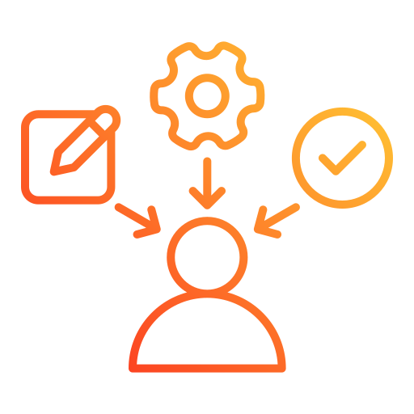

Virtudes y fortalezas

Responsabilidad
Sociabilidad

Creatividad
Mis virtudes se basan en la responsabilidad, la sociabilidad y el aprendizaje continuo. Me comprometo a cumplir con mis tareas de manera seria y efectiva, disfrutando de la interacción y colaboración con otros. Mi pasión por aprender me impulsa a buscar siempre nuevas oportunidades para mejorar, mientras que mi creatividad y empatía me ayudan a encontrar soluciones innovadoras y construir relaciones sólidas y respetuosas.
Información